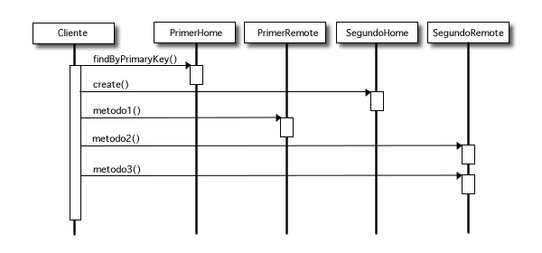
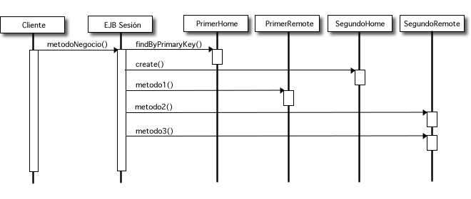
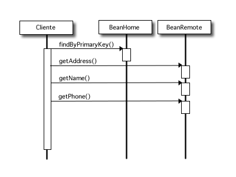
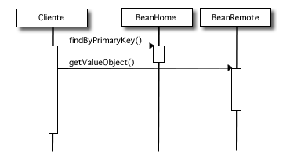

El diseño de la aplicación es clave en el desarrollo de la misma. Un error de implementación es sencillo de reparar, pero un error de diseño obliga a replantear completamente el proyecto. A continuación se enumeran unas recomendaciones sobre el diseño de aplicaciones con EJBs.
El uso de EJBs obliga a ciertos compromisos de eficiencia, implementación o costes de desarrollo. Tenemos que asegurarnos de que la aplicación realmente necesita estos componentes distribuidos. Algunas condiciones necesarias para que la aplicación use EJBs son las siguientes.
Condiciones de diseño
La aplicación debe separarse de forma natural en capas estándar de persistencia, objetos de dominio, lógica de negocio y presentación. La aplicación debe tener componentes de intranet y de extranet.
Condiciones de implementación
La implementación de los EJBs es algo costosa. Un EJB típico consta de cuatro ficheros (interfaz home, remota, implementación y fichero descriptor del despliegue). Debemos tener cierto tiempo para poder acometer esa implementación. Si necesitamos hacer un prototipo rápido es posible usar JSPs y servlets o JavaBeans y después reescribir el código para incluir los EJBs.
Condiciones de eficiencia
Los servidores de aplicaciones están diseñados para proprocionar escalabilidad. Los servicios que proporcionan (manejo de transacciones, pooling de objetos, seguridad) son muy útiles para implementar aplicaciones escalables, pero también usan una gran cantidad de recursos. Si la aplicación no necesita de estos servicios y de esta escalabilidad, el uso de EJBs puede ralentizar la aplicación.
La importancia de la realización de un diseño previo de la aplicación, antes de proceder a su implementación, es aun mayor en la arquitectura J2EE. La gran cantidad de distintos componentes que es posible usar en este tipo de aplicaciones obliga a pensar detenidamente cómo dividir la aplicación y dónde usar cada tipo de componente.
El primer principio de diseño J2EE es el de usar una estructura en capas, con los siguientes componentes:
Capa de presentación
Consiste en la interfaz de usuario de la aplicación. Normalmente contiene ficheros JSP, applets y alguna lógica de presentación que se puede resolver con etiquetas JSP o con alguna solución propia que incluya XML para garantizar la portabilidad de esta capa. Esta capa se considera un cliente de la capa de negocio, porque usa exclusivamente esta capa para completar sus operaciones.
Capa de lógica de negocio
Esta es la capa más importante de la aplicación, al menos desde el punto de vista del programador de EJBs. Esta capa contiene el flujo de trabajo del negocio y servicios varios usados por el cliente. Se basa en la capa de persistencia para el almacenamiento y recuperación de los datos.
Capa de persistencia
La capa de persistencia se ocupa del almacenamiento y la recuperación de los datos en la base de datos del sistema informático. La mayoría del código de esta capa se implementa con EJBs de entidad, y posiblemente algunos tipos de datos relacionados con estos beans de entidad, como son los objetos de datos de acceso (data access objets).
El segundo principio de diseño tiene que ver con el orden en el se desarrollan las capas de la aplicación. El orden más común es el que sigue:
1. Definir los requirimientos y los casos de uso. Esto ayuda a entender qué es lo que la aplicación tiene que hacer y cómo de flexible debe ser, así como puede ayudar a decidir qué tecnologías usar.
2. Definir claramente los objetos del dominio y las interfaces de negocio que serán expuestas a los clientes.
3. Escribir los stubs de algunos componentes, para poder comenzar el desarrollo.
4. Implementar la capa de persistencia.
5. Definir y escribir servicios, que son componentes independientes del sistema que se usan en la implementación.
6. Implementar la capa de lógica de negocio.
7. Implementar la capa de presentación.
Siempre que sea posible hay que intentar usar persistencia gestionada por el contenedor (CMP) para los beans de entidad. La mayoría de servidores de aplicaciones tienen mecanismos optimizados para el manejo de este tipo de beans. Entre los beneficios del uso de la CMP se encuentran:
Los patrones de diseño son imprescindibles; hay que aprender y usar tantos patrones de diseño de EJBs como sea posible. La mayoría de los patrones ahorrarán tiempo de desarrollo, mejorarán la eficiencia de la aplicación y la harán más mantenible. Casi es posible asegurar que sin patrones de diseño sería casi imposible escribir buenas aplicaciones J2EE.
Como ejemplo, veamos rápidamente dos patrones muy comunes: session façade y value objects.
El patrón session façade es el patrón de diseño EJB que se usa más frecuentemente. Representa una forma de encapsular la lógica de negocio para obtener mejor eficiencia y un código más mantenible. La idea básica es muy simple: poner toda la lógica de negocio en beans de sesión sin estado y hacer que los clientes llamen a estos beans, en lugar de a los distintos componentes de la aplicación. Las figuras siguientes explican este concepto.
Antes de aplicar el patrón:

Después de aplicar el patrón:

Este patrón tiene muchas ventajas. La más significativa es que al mover toda la lógica de negocio a una capa adicional obtenemos código mucho más limpio y manejable. Debido a que cada operación de flujo de trabajo se corresponde con un método de negocio en el bean de sesión, la ejecución de dicha operación se realiza bajo una transacción. Además, al definir el bean de sesión, podemos usar interfaces locales para todas las operaciones entre éste y los beans de entidad y sólo mostrar las interfaces remótas del bean de sesión.
El patrón value objects (objetos de valor) o data transfer
objects (objetos de transferencia de datos), representa una forma de transferir
datos entre los componentes remotos. Por ejemplo, supongamos que definimos un
bean de entidad User. Para obtener el nombre del usuario, su apellido,
su teléfono, su dirección, y otros datos, deberíamos usar
al método get del bean para cada dato que queramos obtener.
Si hacemos esto a través de la interfaz remota, la sobrecarga en la red
será muy grande. La solución natural para este problema es crear
un objeto que pueda mantener todos los datos que necesitamos, y usar ese objeto
para transferir los datos. Esto es exactamente lo que hace un value object.
Antes de aplicar el patrón:

Después de aplicar el patrón:

Una práctica común es usar el value object en el bean de entidad, en lugar de construirlo cada vez que el cliente lo pide. Otra práctica común es exponer distintos value objects de un simple bean de entidad, de forma que los clientes sólo obtengan los datos en que están interesados.
Cuando tenemos un número grande de value objects y su manejo se vuelve
tedioso, podría ser interesante implementar un value object genérico
HashMap que pueda transmitir datos arbitrarios. Sin embargo, un
value object genérico tendría sólo una pareja de métodos
getField/setField, y sería complicado de implementar
algún tipo de validación que nos asegurara que se están
definiendo los campos correctos en cada momento. Por el contrario, un value
object normal tiene una pareja de métodos getXXX/setXXX
para cada campo, lo que hace más difícil cometer errores. Un compromiso
es implementar todos los value objects como interfaces y luego usar un
DynamicProxy con un HashMap para almacenar los campos de
los value objects. El ejemplo siguiente muestra una implementación de
un proxy dinámico y cómo se usa en un bean de entidad.
public class ValueObjectProxy implements InvocationHandler, Serializable
{
protected HashMap fieldMap;
protected Class valueObjectClass;
protected ValueObjectProxy (Class valueObjectClass) {
this.valueObjectClass = valueObjectClass;
fieldMap = new HashMap( );
}
public static Object createValueObject (Class valueObjectClass) {
return Proxy.newProxyInstance (
valueObjectClass.getClassLoader( ),
new Class[ ] {valueObjectClass},
new ValueObjectProxy(valueObjectClass));
}
public Object invoke (Object proxy, Method method, Object[ ] args)
throws Exception {
String methodName = method.getName( );
if (methodName.startsWith ("get")) {
// Remove "get" to get the field name.
String fieldName = methodName.substring(3);
// It's a get, so return the value.
if (!fieldMap.containsKey ("fieldName"))
throw new ValueObjectException ("Field " + fieldName
+ " does not exist");
return fieldMap.get(fieldName);
} else if (methodName.startsWith ("set")) {
// Remove "set" to get the field name.
String fieldName = methodName.substring(3);
// Put it into the hashmap.
// Assume we received one argument in the set method.
fieldMap.put (fieldName, args[0]);
// It's neither a get nor a set.
} else {
throw ValueObjectException ("Invalid method");
}
}
}
public SomeBean implements EntityBean
{
// Skipping irrelevant methods . . .
public SomeValueObject getValueObject( )
{
// Create the value object.
SomeValueObject vo = (SomeValueObject)
ValueObjectProxy.createValueObject (SomeValueObject.class);
// Set its values.
vo.setName ("John Smith");
vo.setAddress ("140 Maple Drive");
return vo;
}
}
Algunas reglas importantes que conviene seguir cuando estamos implementando EJBs son las siguientes.
Tal y como hemos comentado en el patrón session façade, es una buena idea usar beans de sesión para que hagan de interfaz de negocio de los beans de entidad. De esta forma, dado que todos los beans de entidad van a comunicarse entre ellos o ser usados por beans de sesion, es conveniente usar interfaces locales en todos los beans de entidad.
Ya hemos comentado que la implementación de un EJB es compleja: consta de cuatro ficheros. Es muy usual cometer errores cuando se escribe el fichero de implementación y el fichero remoto (o local, en el caso de los EJBs de entidad) y llamar a los métodos de forma distinta o usar distintos tipos de parámetros. Este error sólo se va a hacer evidente en tiempo de despliegue. ¿Cómo consegur que estos errores aparezcan en tiempo de compilación? Una idea es la de usar las denominadas interfaces de negocio.
En una interfaz de negocio definimos los perfiles de los métodos de negocio, que se deben corresponder también con los métodos de la clase de implementación. Después hacemos que la interfaz remota o local extienda la interfaz de negocio y que la clase bean implemente esta interfaz de negocio. Debido a que las interfaces remotas arrojan una RemoteException, la interfaz de negocio también debe hacerlo. También, todos los parámetros de los métodos deben ser serializables.
// Interfaz de negocio
public interface Order
{
public int getQuantity( ) throws RemoteException;
public void setQuantity (int quantity) throws RemoteException;
public double getPricePerItem( ) throws RemoteException;
public void setPricePerItem (double price) throws RemoteException;
public double getTotalPrice( ) throws RemoteException;
}
// Interfaz remota
public interface OrderRemote extends Order, EJBObject
{
// Todos los metodos se heredan de Order y EJBObject.
}
// Implementacion
public class OrderBean extends EntityBean implements Order
{
private int quantity;
private double pricePerItem;
// Business interface implementation
public int getQuantity( ) {
return quantity;
}
public void setQuantity (int quantity) {
this.quantity = quantity;
}
public double getPricePerItem( ) {
return pricePerItem;
}
public void setPricePerItem (double price) {
this.pricePerItem = pricePerItem;
}
public double getTotalPrice( ) {
return quantity*pricePerItem;
}
// Other EntityBean methods go here . . .
}
Es importante tener cuidado en no usar las interfaces de negocio en el lado del cliente. Allí debemos seguir usando la interfaz OrderRemote y la clase OrderBean. Sólo debemos usar esta técnica si queremos asegurarnos de detectar los errores en tiempo de compilación.
El manejo de las excepciones en un entorno distribuido J2EE puede ser confuso y complicado. Debido a que la mayoría de las excepciones nunca se disparan en tiempo de producción, se suele tender a ignorarlas o, sencillamente, a imprimirlas. Sin embargo, si queremos escribir aplicaciones robustas, debemos realizar un control estricto de las condiciones en las que pueden aparecer estas excepciones.
Es útil separar las distintas excepciones de los EJB en tres tipos básicos.
RemoteExceptionEsta excepción se declara en todos los interfaces remotos expuestos
por un EJB. Debe ser capturada por los clientes de los EJBs y normalmente se
originan por un problema de conexión a la red. Las clases que implementan
EJBs no pueden arrojar este tipo de excepción. Si se usa una conexión
remota entre EJBs y sucede esta excepción, se debería propagar
la excepción al cliente envolviéndola en una excepción
EJBException.
EJBException y sus subclasesEsta excepción se lanza por el desarrollador en la implementación
del EJB y es capturada por el contenedor. Normalmente, lanzaremos una excepción
de este tipo cuando se ha producido un error importante, en cuyo caso el contenedor
siempre hará un rollback de la transacción actual. Esta excepción
se debería tratar como una NullPointerException: es una
excepción generada en tiempo de ejecución y en general no debe
ser capturada por el desarrollador.
A diferencia de las excepciones previas, las excepciones definidas por la aplicación
deben ser consideradas como normales desde el punto de vista del contenedor.
Un EJB puede declarar y lanzar estas excepciones, y los clientes las capturarán
como si fueran una excepción Java normal. Debido a que las excepciones
se deben mover por la red (desde el EJB hasta el cliente) deben implementar
la interfaz Serializable. Ejemplos de este tipo de excepciones
son las que ya vienen predefinidas en la arquitectura EJB, como CreateException
o FinderException.
Para obtener un DataSource o un interfaz home de un EJB, es necesario
crear un InitialContext, y después buscar (lookup) en él
recurso que necesitemos. Estas operaciones son normalmente muy costosas, considerando
el hecho de que se deben repetir frecuentemente. Una forma de optimizar estas
peticiones es realizar la búsqueda sólo una vez y guardar en una
caché el resultado. El siguiente código hace esto.
public class EJBHomeCache
{
private static EHBHomeCache instance;
protected Context ctx = null;
protected FirstEJBHome firstHome = null;
protected SecondEJBHome secondHome = null;
private EJBHomeCache( )
{
try {
ctx = new InitialContext( );
firstHome = (FirstEJBHome)PortableRemoteObject.narrow (
ctx.lookup ("java:comp/env/FirstEJBHome"),
FirstEJBHome.class);
secondHome = (SecondEJBHome)PortableRemoteObject.narrow (
ctx.lookup ("java:comp/env/SecondEJBHome"),
FirstEJBHome.class);
} catch (Exception e) {
// Handle JNDI exceptions here, and maybe throw
// application-level exception.
}
}
public static synchronized EJBHomeCache getInstance( )
{
if (instance == null) instance = new EJBHomeCache( );
return instance;
}
public FirstEJBHome getFirstEJBHome( )
{
return firstHome;
}
public SecondEJBHome getSecondEJBHome( )
{
return secondHome;
}
}
Un business delegate es una simple clase Java que delega todas las llamadas a un EJB. Podría parecer demasiado simple para ser útil, pero sin embargo es un patrón de diseño muy usado. La principal razón para usar un business delegate es separar la lógica de manejo del EJB (por ejemplo, la obtención de la interfaz remota, el manejo de las excepciones remotas, etc.) de los clientes de forma que los desarrollodares que trabajan en el lado del cliente no tengan que conocer y preocuparse de los EJBs.
Otro beneficio del patrón de diseño es la posibilidad de realizar prototipado rápido de la aplicación, escribiendo en los métodos código de prueba, o incluso llamadas a JDBC. Incluso en una aplicación completa J2EE, el uso de este patrón puede ser útil para encapsular o usar almacenar en cachés los resultados de las llamadas a los EJBs.
En el siguiente ejemplo, se usa un business delegate para implementar una política de reintento de conexión en caso de problemas de red.
public class BeanDelegate
{
private static final int NETWORK_RETRIES = 3;
private BeanRemote bean;
public void create( ) throws ApplicationError
{
// Here you get a bean instance.
try {
InitialContext ctx = new InitialContext( );
BeanHome home = (BeanHome) PortableRemoteObject.narrow (
ctx.lookup ("ejb/BeanExample"),
BeanHome.class);
// Retry in case of network problems.
for (int i=0; i<NETWORK_RETRIES; i++)
try {
bean = home.create( );
break;
} catch (RemoteException e) {
if (i+1 < NETWORK_RETRIES) continue;
throw new ApplicationError ("Network problem "
+ e.toString( ));
}
}
} catch (NamingException e) {
throw new ApplicationError ("Error with bean");
}
}
public void remove( ) throws ApplicationError
{
// Release the session bean here.
// Retry in case of network problems
for (int i=0; i<NETWORK_RETRIES; i++)
try {
bean.remove( );
break;
} catch (RemoteException e) {
if (i+1 < NETWORK_RETRIES) continue;
throw new ApplicationError ("Network problem "
+ e.toString( ));
}
}
}
public int doBusinessMethod (String param) throws ApplicationError
{
// Call a bean method here.
for (int i=0; i<NETWORK_RETRIES; i++)
try {
return bean.doBusinessMethod (param);
} catch (RemoteException e) {
if (i+1 < NETWORK_RETRIES) continue;
throw new ApplicationError ("Network problem "
+ e.toString( ));
}
}
}
}
Por último veamos algunas recomendaciones sobre despliegue de una aplicación J2EE.
Es muy importante definir un entorno de construcción de las aplicaciones que desarrollemos. Entendemos por entorno de construcción un conjunto de comandos que simplifiquen la compilación, empaquetamiento y despliegue de las aplicaciones. Incluso si estamos usando un entorno integrado de desarrollo (IDE) para crear los ficheros EJB JARs y WARs, es conveniente desarrollar este tipo de entornos.
El principal beneficio es el de tener el control total sobre la estructura de los ficheros producidos, sin depeneder de las características particulares de una herramienta de desarrollo concreta.
Una herramienta de código abierto que cada vez se usa más es Ant. Está escrita en Java y es fácilmente personalizable para cualquier tarea, ya sea compilar aplicaciones, empaquetarlas, desplegarlas, etc. Es muy recomendable estudiar su uso.
Esta es una de las reglas principales que se suelen ignorar cuando se desarrollan aplicaciones con EJBs. La razón es muy simple: las aplicaciones J2EE son grandes y normalmente son más difíciles de depurar que las aplicaciones normales.
Por ello es muy útil usar un framework de casos de prueba como JUnit (http://www.juinit.org) para probar las distintas capas de la aplicación de forma separada. Al probar las capas de forma independiente es posible aislar mejor los errores.
Es también una buena práctica el incluir código de diagnóstico en tiempo de ejecución en la versión final de la aplicación. Para que la aplicación funcione correctamente se deben desplegar muchos componentes y sistemas, y es útil generar un log en el que se registren los problemas que se detectan. De esta forma, por ejemplo, se podrían chequear fácilmente problemas ocasionados por la no conexión de los recursos necesarios para que la aplicación funcione.